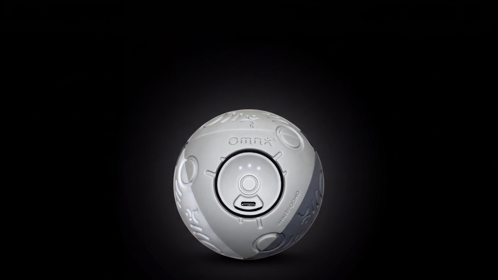

The Choice is Yours
Start gently and shape the session around what you want from the moment, with adjustable rhythms, intensity and duration.
Go smart, playful recovery.

THE OMGO FAMILY
Your recovery naturally feels different from day to day. OMGO is designed to make it personal, controllable and easy to return to, adapted in two distinct forms, OMGO-sphere and OMGO-mini, for different moments, spaces and routines throughout your day.
Start gently and shape the session around what you want from the moment, with adjustable rhythms, intensity and duration.
Built to feel satisfying in the hand, with a quiet yet powerful vibration experience shaped around touch, texture, and physical interaction.
Designed for real routines. Across training, work, travel, and daily reset moments, OMGO fits naturally into the way you move through life.
FOUNDER-LED ENGINEERING
OMNX is a UK-based, founder-led brand developing original recovery technology through hands-on work across product design, electronics, mechanics, materials, firmware, and real-world user testing. It began with a simple question: what if recovery technology could give people more choice, control and a clearer way to find what feels suitable for the moment?
A massager's speed, force and utility matter, but they are only part of the whole user experience. Touch, sound, rhythm, comfort, context and user choice all shape how a recovery routine feels. OMNX brings these elements together in a more personal and controllable approach to everyday recovery.
Built Through Founder-Led Engineering.
We have invested more than 3,000 hours in designing, prototyping, testing and refining OMGO, bringing mechanics, electronics, materials, firmware and sensory interaction together to make recovery tools feel precise, convenient and controllable in use.
The long-term vision is an AI-driven recovery platform that connects physical devices via Bluetooth with smarter guidance, personal routines, and human-centred recovery data.